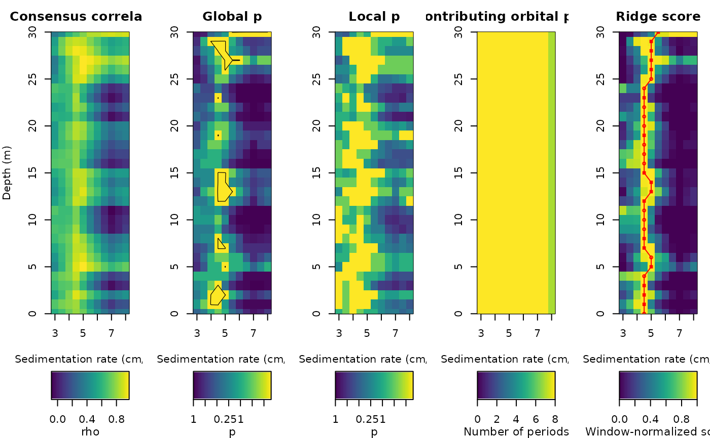

Plots the five eCOCO maps used by Acycle for Blocked and
Interleaved eCOCO: consensus correlation, consensus SR-global p and
same-rate local p (both as -log10(p) with their own 1-2-5 display range,
limited by the Monte Carlo resolution 1/(n_sim+1), with the 0.05 and 0.01
contours), the number of contributing orbital periods, and the
window-normalised ridge score with the tracked ridge (filled squares:
global p <= 0.05; filled circles: local p <= 0.01; open circles: neither).
Also accepts cocoR ecoco_adaptive results. Translated from Acycle
v3.1 ecocoplot.m (Mingsong Li); base graphics only.
Usage
plot_ecoco_cv(
ecoco = NULL,
panels = 1:5,
reverse_depth = FALSE,
palette = .wr_hcl_cols(64, "viridis")
)Arguments
- ecoco
eCOCO result to plot: the list returned by
ecoco_blocked,ecoco_interleavedorecoco_adaptive(withsr,depth,rho,p_global,p_local,norbit,scoreandtrack). Required (Default=NULLgives an error).- panels
Which maps to draw, side by side in the order given (integer vector with values 1 to 5): 1 consensus correlation coefficient (rho), 2 SR-global p, 3 same-rate local p, 4 number of contributing orbital periods, 5 window-normalised ridge score with the tracked ridge.
Default=1:5.- reverse_depth
Reverse the depth axis so that depth increases downwards (logical, TRUE or FALSE).
Default=FALSE.- palette
Colours of the colour scale of all maps (character vector of colours, e.g. the output of
hcl.colors); the first colour is used for the lowest values and the length of the vector sets the number of colour levels.Default=64 viridis colours (dark purple to yellow).
Value
Invisibly, the list of plotted matrices (rho, -log10 p maps, orbit count, normalised score) and the ridge.
References
Li, M., Kump, L.R., Hinnov, L.A., Mann, M.E., 2018. Tracking variable sedimentation rates and astronomical forcing in Phanerozoic paleoclimate proxy series with evolutionary correlation coefficients and hypothesis testing. Earth and Planetary Science Letters 501, 165-179.
Examples
# \donttest{
set.seed(2)
dt <- 0.05
depth <- seq(0, 30, by = dt)
tt <- depth * 100 / 5
x <- sin(2 * pi * tt / 405.7) + 0.8 * sin(2 * pi * tt / 98.9) +
0.5 * sin(2 * pi * tt / 40.99) + 0.4 * sin(2 * pi * tt / 23.68) +
0.3 * rnorm(length(tt))
res <- ecoco_blocked(cbind(depth, x), window = 10, sr = seq(3, 8, 0.5),
step_depth = 1, pad = 400, n_sim = 20)
#> Warning: Blocked eCOCO has no tested rate with complete all-nine training geometry; continuing with the partial-orbit target at 8 of 11 rates (degraded/exploratory result).
plot_ecoco_cv(res)

# }